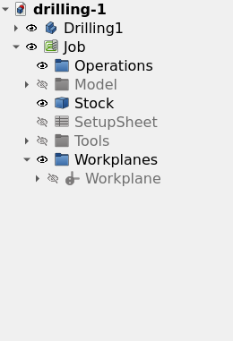
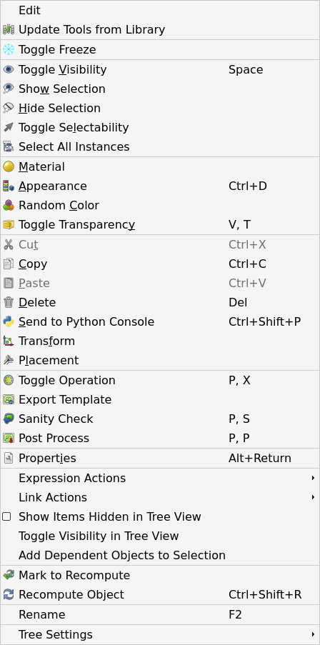
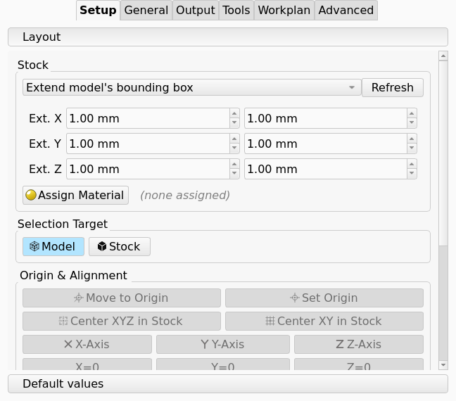
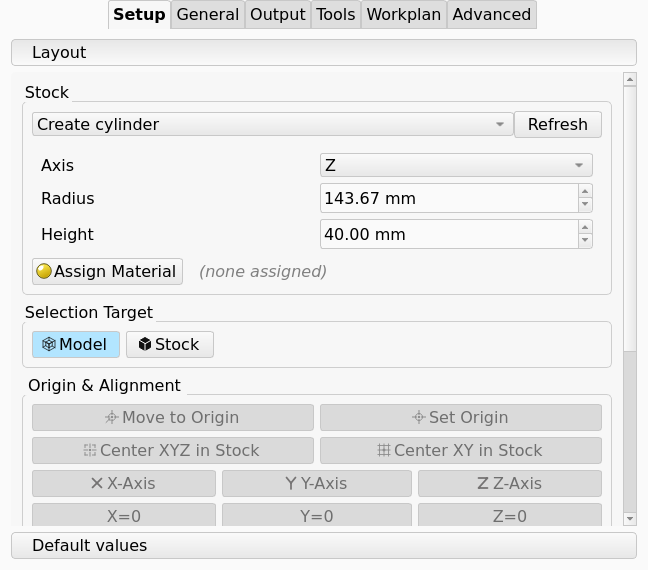
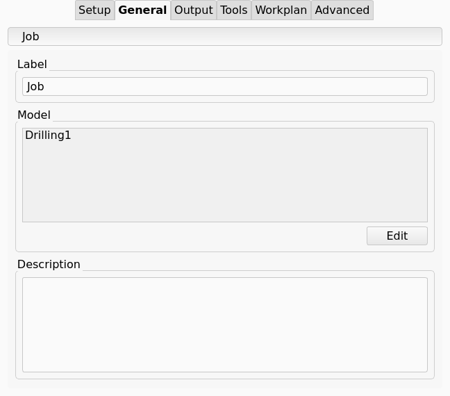
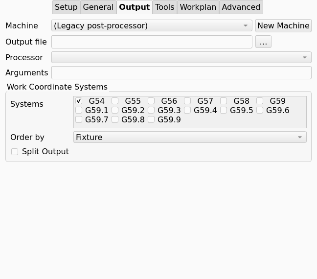
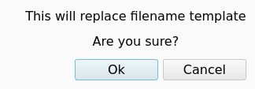
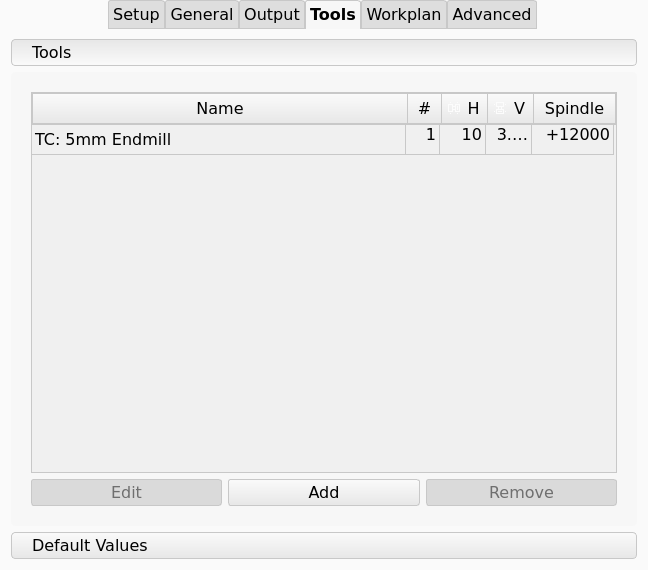
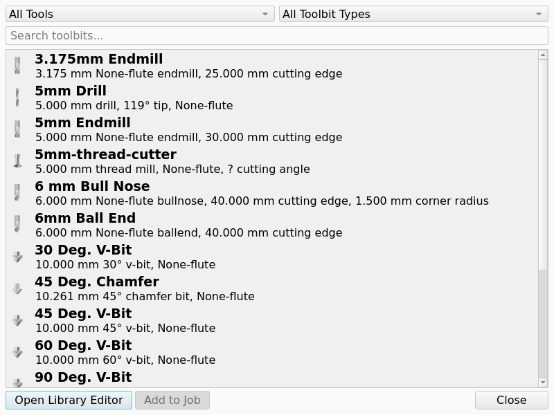
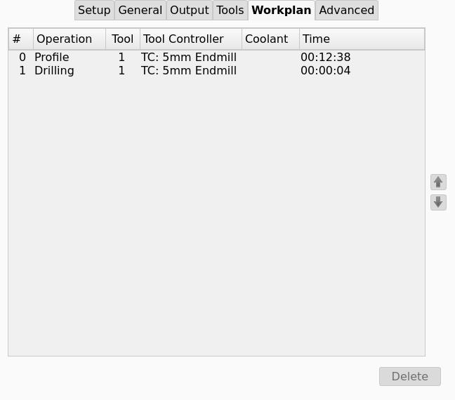

Job
Job
- Menu location
-
- Workbenches
- Default shortcut
-
P+J
- Introduced in version
-
-
- See also
-
Export Template, Setup Sheet, Machine, Sanity Check, Work Plane, Post Process
Description
The New Job command creates a Job in the active document.
A Job is the top-level CAM object of one project.
The tooltip of the command is Creates a CAM job.
A Job holds these objects and values:
-
A Job Model Group. The Job Model Group holds a Resource Clone of each Model, and the Job does not change the original geometry. A Job can hold several Models and several copies of one object.
-
A Stock object, which shows the material that the Tool Bit cuts. The Stock comes from the bounding box of the Models (default), a box, a cylinder, or an existing solid of the document.
-
A Tools group of Tool Controllers (TC). Each Tool Controller pairs a Tool Bit with a Spindle Speed, a Horizontal Feed, a Vertical Feed and the speeds for rapid moves.
-
The Operations (Op), in the sequence in which the Job outputs them.
-
introduced in 26.3 A Workplanes group of Work Planes. Several Operations of the Job can share one Work Plane. See Work Plane.
-
A Setup Sheet. The Setup Sheet is the container of the default values and expressions of the Job for new Operations. The Setup Sheet is not a shop document.
-
The output configuration: the output file, the Post-Processor (Post), the Machine, the Fixtures, the output sequence and the split of the output into files. A Fixture is a G54 to G59.9 selection. A Fixture is not a clamp.
The tree view shows the Operations, the Job Model Group, the Stock, the Setup Sheet, the Tools group and the Workplanes group below the Job. The figure shows the tree view of a Job with one Work Plane.

When you delete the Job, FreeCAD also deletes the Operations, the Resource Clones, the Stock, the Tool Controllers, the Setup Sheet and the Work Planes of the Job.
Usage
-
Optional: select the objects for the Model in the tree view.
-
Start the command with one of these controls:
-
Press the New Job button in the Project Setup toolbar.
-
Select .
-
Press P then J.
-
Right-click a solid or a 2D object in the tree view, then select New Job. The New Job dialog shows the selected objects as selected Models.
-
-
Set the Job Template, the Models and the document units in the New Job dialog.
-
Press OK. The Job task panel opens with the Setup tab active.
-
Set the Stock and the position of the Model on the Setup tab.
-
Add a minimum of one Tool Controller on the Tools tab.
-
Set the output file and the Machine or the Post-Processor on the Output tab.
-
Press OK.
Double-click the Job in the tree view to open the Job task panel again. The Edit entry of the Job context menu also opens the Job task panel.
The Job task panel shows a message on OK when the Job has no Model or no Tool Controller. The message has an Add button that adds the object.
| Do not cancel the Job task panel immediately after you create a Job. FreeCAD removes the new Job. |
Context menu
Right-click a Job in the tree view to get these entries:
-
Edit: opens the Job task panel.
-
introduced in 26.3 Update Tools from Library: compares the Tool Bits of the Job with the Tool Library and offers an update of the presets and the geometry. The command finds the related Tool Bit in the Tool Library by its Tool Bit ID. The command does not change a Tool Bit that the Tool Library does not have.
-
Toggle Operation
-
Export Template: see Export Template.
-
Sanity Check: see Sanity Check.
-
Post Process: see Post Process.
The figure shows the context menu of a Job.

Options
New Job dialog
The command opens the New Job dialog, which has three groups:
-
Template: selects a Job Template. The list contains
(none)and eachjob_*.jsonfile in the asset Templates directory, the CAM file path and the macro directory. introduced in 26.3: A list entry shows its description when the pointer is on it. See Export Template. -
Model: a tree with the categories
Solids,2DandJobs. Select the objects for the Model. Increase the value in the Count column to get several copies of one object. When you select a different Job, the new Job uses the Models of that Job with their placement. -
introduced in 26.3 Document Units: the unit schema that OK applies to the document. The dialog shows a schema with velocity per minute in green. The dialog shows a schema with velocity per second in red, because that schema is not safe for G-code feed values.
Job task panel
The Job task panel has six tabs, in this sequence: Setup, General, Output, Tools, Workplan and Advanced. The Job task panel applies the changes and recomputes the Job when you select the Setup tab again.
Setup
The Setup tab sets the Stock, the position of the Model and the Stock, and the default values of the Job.

-
Stock source: sets how the Job makes the Stock. Values
Create box,Create cylinder,Extend model’s bounding box,Use existing solid. Default:Extend model’s bounding box.-
Create box: enter Length, Width and Height. -
Create cylinder: select Axis, then enter Radius and Height. -
Extend model’s bounding box: enter the added material in the negative and the positive direction of X, Y and Z. A negative value makes the Stock smaller. -
Use existing solid: select a solid of the document. The Job makes a clone of the solid and uses the clone as the Stock.
-
-
introduced in 26.3 Axis: the axis of the cylinder. Values
X,Y,Z. Default:Z. -
Refresh: makes the Stock again from the values in the panel.
-
Assign Material: assigns a material to the Stock. The Sanity Check report and the feed and speed calculation use the material.
A new cylinder gets its dimensions from the bounding box of the Models.
Height is the length of the bounding box along Axis, with a minimum of 1 mm.
Radius is half of the diagonal of the two other dimensions of the bounding box.
The cylinder starts at the minimum of the bounding box along Axis, and its axis goes through the center of the two other dimensions.
The figure shows the Stock group with Create cylinder selected.

-
Model: selections in the 3D view come from the Model. You cannot select the Stock.
-
Stock: selections in the 3D view come from the Stock. You cannot select the Model.
The two buttons are toggle buttons. Only one of the two buttons is active at a time.
-
Move to Origin: moves only the selected object so that the selected point is at the origin.
-
Set Origin: moves the Model and the Stock so that the selected point becomes the origin.
-
Center XYZ in Stock: centers the selected object in the Stock in X, Y and Z.
-
Center XY in Stock: centers the selected object in the Stock in X and Y. The Z position does not change.
-
X-Axis, Y-Axis, Z-Axis: rotate the object so that the selected edge or planar face aligns with that axis.
-
X=0, Y=0, Z=0: translate the object so that the selection is at zero on that axis.
-
Link stock and model: when selected, the Stock follows each translation and rotation of the Model that the Job task panel makes. When clear, you position the Stock independently of the Model.
Move to Origin and Set Origin accept a vertex, an edge or a face. The selected point of a straight edge is its midpoint. The selected point of an arc is the center of the arc. The selected point of a face is the center of the face.
-
Arrow buttons below X/Y: move the selection along -X, +X, -Y or +Y by the step distance.
-
introduced in 26.3 Arrow buttons below Z: move the selection along +Z or -Z by the step distance.
-
Step distance field, between the X/Y arrow buttons: the distance of one move, in document units. Default: 1 mm, or 0.1 in when the unit system is imperial.
-
Rotate buttons: rotate the selection counter-clockwise or clockwise around the selected axis by the angle.
-
introduced in 26.3 Rotation axis list: the axis of the rotation. Values
X Axis,Y Axis,Z Axis. Default:Z Axis. -
Angle field: the angle of one rotation. Minimum -180°, maximum 360°. Default: 90°.
-
Compound: has an effect only when you select more than one object. When selected, all selected objects rotate together around the center of their common bounding box. When clear, each object rotates around its own center. Default: selected.
-
Expressions and offsets that the Setup Sheet keeps for new Operations: start depth, final depth, step down, clearance height, safe height and coolant mode.
General

-
Label: the label of the Job in the tree view.
-
Model: the list of the Models of the Job, with a count for copies. Edit opens the Model Selection dialog, which has the same tree as the New Job dialog. Use the Model Selection dialog to add Models, remove Models or change the count.
-
Description: notes about the Job. The notes have no effect on the Toolpath.
Output

-
introduced in 26.3 Machine: selects the Machine of the Job from the
.fcmfiles in the asset path. The first entry,(Legacy post-processor), selects no Machine. With a Machine selected, the Machine supplies the Post-Processor and the output options, and the Post-Processing Dialog opens for output. See Machine and Machine Configuration. -
New Machine: opens the Machine Editor to create a Machine. The Job selects the new Machine after you save it.
-
Output File: the directory, the name and the extension of the G-code output file. The value can contain the placeholders in the list that follows. Without an extension, the output uses
.nc. A machine-based Post-Processor uses the file extension of the Machine.-
%D: the directory of the active document. -
%d: the name of the active document. -
%M: the macro directory. -
%j: the label of the Job. -
%T: the Tool Number.%t: the label of the Tool Controller.%W: the Fixture.%O: the label of the Operation.%S: the sequence number. These five placeholders apply only in the file name, and only when Split Output is selected. Split output always gets a sequence number at the end of the file name when%Sis absent.
-
-
Processor: selects an argument-based Post-Processor. The list contains only the Post-Processors that the preferences enable, and no machine-based Post-Processors. The panel shows Processor only when Machine is
(Legacy post-processor). -
Arguments: the arguments for the argument-based Post-Processor. The panel shows Arguments only when Machine is
(Legacy post-processor). -
Work Coordinate Systems group:
-
Order by: sets the groups of the output when the Job outputs several Fixtures. Values
Fixture,Tool,Operation. -
Systems: a list of the Fixtures G54 to G59.9 with a check box for each. The Job outputs the selected Fixtures. Default: G54. See Fixture.
-
Split Output: writes one G-code file for each group that Order by sets.
-
The Output File field has a control that opens the Select Output File dialog.
The Select Output File dialog starts at the file name that the current value of Output File gives.
When that file and its directory do not exist, the dialog starts in the directory of the active document.
After you select a file, a Warning message shows This will replace filename template and Are you sure?.
Ok replaces the value of Output File with the selected file. Cancel keeps the value.
The figure shows the message.

The Systems list repeats the program for each selected Fixture. A Work Plane can name a Fixture of its own, which the Post-Processor selects in each repetition.
Tools

The table lists the Tool Controllers of the Job with the name, the Tool Number, the Horizontal Feed, the Vertical Feed and the Spindle Speed. A negative Spindle Speed value gives the reverse direction. You can edit a cell in the table.
-
Add: opens the Tool Library dialog. Each Tool Bit that you add in the dialog gets a Tool Controller in the Job, and the table shows the Tool Controller immediately. The dialog stays open until you close it. See Tool Library.
-
Edit: opens the Tool Controller editor.
-
Remove: removes a Tool Controller. The button is available only for a Tool Controller that no Operation uses. A minimum of one Tool Controller stays in the Job.
introduced in 26.3: The Tool Library dialog has an All Tools view that shows the Tool Bits of all Tool Libraries.
A Tool Bit from All Tools has no number from a Tool Library, and the dialog asks for a Tool Number.
The default is the subsequent free number in the Job.
The figure shows the dialog with the All Tools view.

introduced in 26.3: The table refuses a Tool Number that a Tool Controller with a different Tool Bit uses.
The Tool Number In Use message names the Tool Controller that has the number, and the cell shows the previous number again.
Two Tool Controllers with the same Tool Bit can have the same Tool Number.
The figure shows the message for a number that TC: 5mm Endmill has.

A change of a feed or a speed in the table does not change the Tool Library. The Rapid Speeds group of Default Values sets the horizontal and vertical rapid speeds that the Setup Sheet applies to new Tool Controllers.
Workplan

The Workplan tab lists the Operations in the sequence in which the Job outputs them. Select an Operation and press an arrow button to move it up or down in the sequence. Delete removes the selected Operation from the document.
introduced in 26.3: The Workplan list shows one row for each Operation, with these columns:
-
#: the position of the Operation in the sequence. The first Operation has the number 0.
-
Operation: the label of the Operation.
-
Tool: the value of Tool Number of the Tool Controller of the Operation. The cell is empty when the Operation has no Tool Controller.
-
Tool Controller: the label of the Tool Controller of the Operation. The cell shows
???when the Operation has no Tool Controller. -
Coolant: the coolant mode of the Operation. The cell is empty when the coolant mode is
None. -
Time: the estimated cycle time of the Operation.
Advanced
introduced in 1.1: The Operation Defaults tab has a list of Operation types. For the selected Operation type, a table lists the default values that the Setup Sheet applies to new Operations of that type. See Setup Sheet.
Properties
-
Model (
Link): the Job Model Group, which holds the Resource Clones of the Models. -
Stock (
Link): the solid that the Job uses as the Stock. -
Tools (
Link): the group of Tool Controllers. -
Setup Sheet (
Link): the Setup Sheet that holds the default values of the Job. -
Operations (
Link, hidden): the group of all Operations, in the sequence in which the Job outputs them. -
introduced in 26.3
Workplanes(Link, hidden): the group of named Work Planes that the Operations can share. -
Job Type (
Enumeration, hidden): values2D,2.5D,Lathe,Multiaxis. The workbench does not use the value.
-
Geometry Tolerance (
Length): the tolerance for the calculation of Toolpaths. A smaller value increases the accuracy and the calculation time. Default: the value in the preferences.
-
PostProcessorOutputFile(File): the directory and file name of the G-code output, with the placeholders of Output. -
PostProcessor(Enumeration): the argument-based Post-Processor. The values are the argument-based Post-Processors that the preferences enable. The list can be empty. -
PostProcessorArgs(String): the arguments for the argument-based Post-Processor. -
Split Output (
Bool): splits the output into several G-code files. -
introduced in 26.3 Machine (
String): the name of the Machine (.fcm) of the Job. When the property has a value, output uses the machine-based Post-Processor. -
introduced in 26.3
PostProcessorPropertyOverrides(Map): a JSON dictionary of Post-Processor properties that replace the Machine defaults for this Job. -
Last Post Process Date, Last Post Process Output (hidden): the date and the output file of the last output.
-
Description (
String): an optional description. -
Cycle Time (
String, read-only): the estimated cycle time of all Operations.
-
Fixtures (
StringList): the list of Fixtures (G54 to G59.9) that the Job outputs. Default: G54. -
Order Output By (
Enumeration): valuesFixture,Tool,Operation.
-
Base, Ext Xneg, Ext Xpos, Ext Yneg, Ext Ypos, Ext Zneg, Ext Zpos: for a Stock from the bounding box of the Model. The six values give the added material on each side. Default: 1 mm, or 3.175 mm when the unit of the preferences is the inch. introduced in 26.3: The properties accept negative values.
-
Length, Width, Height: for a box.
-
Radius, Height: for a cylinder.
-
introduced in 26.3 Axis (
Enumeration): the axis of a cylinder. ValuesX,Y,Z. Default:Z. -
Placement: the position of the Stock.
-
Stock Type (hidden): the method that made the Stock.
introduced in 1.1: The Stock of a flat Model has a minimum height of 1 mm.
introduced in 26.3: A new Stock shows as tan dotted lines in the Flat Lines display mode, with Transparency 95 and Selectable false.
Notes and limitations
-
The Job creates the Workplanes group when you create the Job. The Job also creates the group when you open a document in which the Job has none.
-
The Work Plane command puts each new Work Plane in the Workplanes group of the Job.
-
When you open a document, the Job moves into the Workplanes group each Work Plane that an Operation links to and the group does not hold.
-
When you open a document, the Job adds the Fixture property to each Work Plane that does not have it.
-
The Job accepts a Work Plane with any orientation. The Post-Processor refuses a Work Plane that the Machine cannot reach.
-
The Fixtures list of the Job and the Fixture of a Work Plane are independent. The Fixtures list repeats the program for each Fixture. The Post-Processor selects the Fixture of a Work Plane in each repetition, then goes back to the Fixture of the Job.
-
A Work Plane with an empty Fixture uses the Fixture of the Job.
-
introduced in 26.3 When you open a document, FreeCAD compares the Tool Bits of the Job with the Tool Library. When the Tool Library has newer presets, FreeCAD asks if you want the update. The default answer is no.
-
sets the defaults for new Jobs: the Job Template, the geometry tolerance, the Stock shape and placement, the Post-Processor and the output directory. See Preferences.
Scripting
The example creates a Job for a box, sets the output file, and replaces the Stock with a cylinder along X.
import FreeCAD
import Path.Main.Job as PathJob
import Path.Main.Stock as PathStock
doc = FreeCAD.newDocument()
box = doc.addObject("Part::Box", "Box")
doc.recompute()
job = PathJob.Create("Job", [box], templateFile=None)
job.PostProcessorOutputFile = "/tmp/%j.nc"
stock = PathStock.CreateCylinder(job, axis="X")
doc.removeObject(job.Stock.Name)
job.Stock = stock
doc.recompute()PathStock.CreateCylinder(job, radius=None, height=None, placement=None, axis=None) calculates each value that you do not give from the bounding box of the Models.
In the GUI, use Path.Main.Gui.Job.Create(base, template=None, openTaskPanel=True).